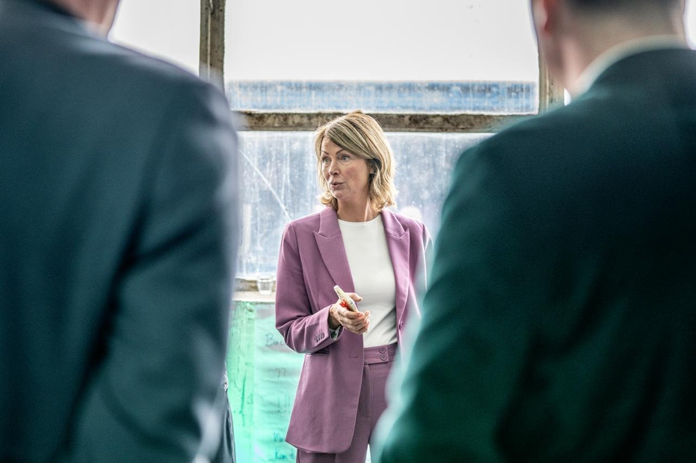

Foto volgtimg/terugblik-1.jpg
01
Werkgevers in beweging gebracht
In Gorinchem, de Drechtsteden en Rivierenland ging ik in gesprek met werkgevers over hun bemensingsvraagstukken. Niet alleen over de openstaande vacature, maar over de vraag erachter: welk werk moet er gebeuren, en welke skills zijn daar echt voor nodig?
Waar dat hielp, bracht ik werkgevers in contact met regionale partners, initiatieven en dienstverlening, zodat ze niet bleven hangen bij de vraag maar ook in actie kwamen.